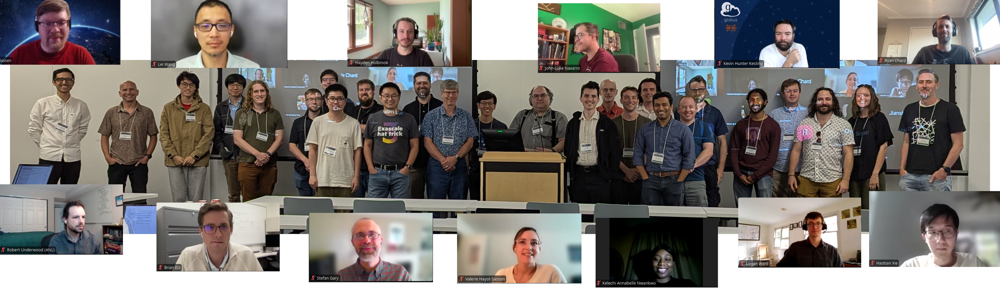

Globus Compute + ParslFest 2025 - Annual Community Gathering (Hybrid) August 28-29, 2025

The seventh Globus Compute + ParslFest Community Meeting will be held as a hybrid meeting on August 28–29, 2025. It will start around noon on the 28th, with talks that day, and on the morning of the 29th. The afternoon of the 29th will be an open session for hands-on work, hacking, testing, bring-your-own-code, etc. The in-person component will be hosted at the University of Chicago. This annual community event aims to bring together researchers, developers, and cyberinfrastructure experts worldwide to discuss experiences using and developing Parsl and Globus Compute (formerly known as funcX) – a federated function-as-a-service platform related to Parsl.
Registration
Registration is officially open – register here: https://ti.to/nf-projects/parslfest2025. This year, we are charging a nominal registration fee for in-person attendance to help cover event costs. Limited travel support (including for the registration fee) is available for those who need it. Travel support requests will be reviewed on a first-come, first-served basis. Please email Sophie Bui
Location (for in-person component)
ParslFest will be held at the University of Chicago at the John Crear Library (Room 390).
📍 Address: 5730 S. Ellis Ave. Chicago, 60637
Event Program
Schedule
Thursday, August 28, 12 pm - 5 pm CDT (17:00 - 22:00 UTC)
12:00 pm – 🍴 Lunch (provided for in-person attendees)1:00 pm - Welcome! - Kyle Chard, University of Chicago/Argonne National Laboratory.
1:15 pm - Session 1 | Chair: Kyle Chard
- Sicheng Zhou: WRATH: Workflow Resilience Across Task Hierarchies in Task-based Parallel Programming Frameworks 📡
- João Gabriel Loureiro de Lima Lembo: Implementing Cold-Start Reduction Techniques on Globus Compute 📡
- Christopher Harrop: Enhancements for Parsl and Globus Compute Integration 🏢 • Slides
- Hai Duc Nguyen: Resilient Solutions for Tomographic Reconstruction 🏢
- Kelechi Annabelle Nwankwo: Parslet: Making Workflow Automation Accessible on Android and Low-Power Devices 📡
- Seena Vazifedunn: StreamHub: High-performance Managed SciStream as a Service 🏢
2:40 - Session 2 | Chair: Yadu Babuji
- Haotian Xie: Training Neural Networks with Diamond 📡
- Laura Walizer: A Multifidelity, Multiobjective Optimization Workflow With Parsl 📡 • Slides
- Will Engler: Garden: Lessons Learned from Serving AI for Science Models with Globus Compute 🏢
- Mike Tynes: Distributed on-the-fly Training of Neural Network Potentials with Parsl and Colmena 🏢
- Logan Ward: Deploying AI+Simulation Workflows for MOF Design (with Parsl) 📡
- Robert Underwood: Leveraging Parsl for Scalable Data Parsing for AuroraGPT 📡 • Slides
- Matt Baughman: Adaptive Task Management: Enabling Multi-Site Workflows with Globus Compute 🏢
4:00 - Session 3 | Chair: Daniel S. Katz
- Benoit Cote: Deploying Inference Services at ALCF 📡
- Josh Bryan: Globus Compute Past and Future 🏢 • Slides
- Chris Janidlo: Globus Compute Serialization Overview 🏢 • Slides
- Pedro Enrique Martinez Fernandez: Globus Compute + DataLad: Provenance-Based Workflow Scheduling in Remote Infrastructure 📡 • Slides
- Valerie Hayot-Sasson: Facilitating Reproducibility Evaluations on HPC with Globus Compute and GitHub Actions 📡
- Arham Khan: LSHBloom: Memory-efficient, Extreme-scale Document Deduplication 📡
- Joshua Herman: Accelerating QMCPy Notebook Tests with Parsl 🏢 • Slides
5:45 pm - Dinner - Nella Pizza e Pasta
Address: 1125 E 55th St, Chicago, IL 60615
Friday, August 29, 8:30 am - 4 pm CDT (13:30 - 21:00 UTC)
8:30 am - 🥐 Breakfast (provided for in-person attendees)9:00 am - Session 4 | Chair: Yadu Babuji
- Mansi Sakarvadia: Topology-Aware Knowledge Propagation in Decentralized Learning 📡
- Daniel S. Katz: Parsl sustainability 🏢
- James Klassen: Calculating Optimal Size of Parsl Runs for DEM Production 📡
- Patrick Wells: The OpenCosmo Project and the Evolution of Science Infrastructure 🏢
- Alok Kamatar: Core Hours and Carbon: The Environmental Impact of Federated Computing 🏢
- Daniel Babnigg: Parallel Scripting in a Integral Field Unit Spectroscopy Pipeline 🏢
- Ben Clifford: Parsl Monitoring Message Flows 📡 • Slides
10:20 am - Session 5 | Chair: Chris Janidlo
- Tianle Wang: Integration of Globus Compute and Harvester for ATLAS Workflow at HPC 🏢
- Haochen Pan: Globus MCPs for Science and High Performance Computing 🏢
- Douglas N. Friedel: KeepItRunning: A New Tool for Migrating Running Jobs Between HPC Resources 🏢
- Greg Pauloski: Academy: Empowering Scientific Workflows with Federated Agents 📡
- Stefan Gary: Using parsl-perf to Evaluate Performance in a Hybrid HPC Environment 📡
- Ben Clifford: HTEX Interchange in 3 Languages 📡 • Slides
11:35 a.m. - Session 6 | Chair: Kyle Chard
- Dave Bunten: With Great Parsl Comes Great Portability: Using Parsl through CytoTable for Harmonizing Single-cell Data 📡
- Naomi Kolodisner: Adaptive Tool Selection in a Scalable Genomics Pipeline 📡
- Alex Brace: Fast Homology Detection Across 250M Proteins with Deep Learning • Slides • Video🎞️
- Dan Dietz: Globus Compute at OLCF 🏢
- Geoffrey Lentner: Enabling Science for NSF ACCESS via Globus Compute 🏢
- Yadu Babuji: Parsl Scaling on Aurora 🏢
1:30 p.m. – Hackathon/Office Hours
General Inquiries or Questions?
Contact us at parsl@googlegroups.com.
Prior ParslFest Meetings
Parsl community meetings have brought together hundreds of researchers, developers, and cyberinfrastructure experts for meetings that included presentations and discussions.
The ParslFest 2024 page includes the agenda and all presentations (slides and videos) from ParslFest 2024.
The ParslFest 2023 page includes the agenda and all presentations (slides and videos) from ParslFest 2023.
The Parsl & funcXFest 2022 page includes the agenda and all presentations (slides and videos) from Parsl & funcXFest 2022.
The Parsl & funcXFest 2021 page includes the agenda and all presentations (slides and videos) from Parsl & funcXFest 2021.
The ParslFest 2020 page includes the agenda and all presentations (slides and videos) from ParslFest 2020.
The ParslFest 2019 page includes the agenda and all presentations (slides) from ParslFest 2019.